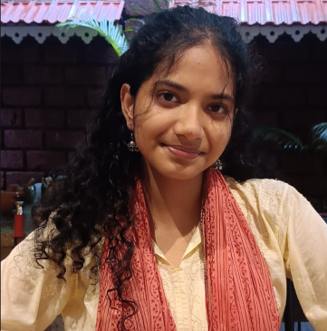

Indian Institute of Management, Bangalore: Bachelor in Business Administration Digital Business Entrepreneurship
2026 - 2029

First-year dual-degree undergraduate student pursuing Economics and a BBA in Digital Business & Entrepreneurship.
Dual-degree undergraduate pursuing Economics and a BBA in Digital Marketing, with hands-on experience in communication, social media management, designing and research. Experienced in leading teams and coordinating different teams.
Sangam India, Pune — Communication Intern (August 2026 – October 2026)
Worked across communications, ground operations, and marketing for a startup incubation platform in India's Orange Economy.
Served as a Communications Intern for the 15th edition of the 11:11 X Grand Food Fest in Hyderabad, coordinating 100 food stalls and managing event operations.
8:10, Newsletter of Gokhale Institute of Politics and Economics — Social Media & Design Team Member
Designed bimonthly newsletter covers.
Created end-to-end content, including reels, post ideas, and copywriting.
Under The Banyan Tree (UTBT), Policy Discussion Club at Gokhale Institute of Politics and Economics — Social Media & Design Team Member
Designed event poster covers and information handbooks.
Contributed to social media content creation and reel conceptualization.
2026 - 2029
2026 - 2030
Score: 94.5%
2024 - 2026
Score: 95.8%
2019 - 2024
Research & Report Writing
Communication & Negotiation
Business Operations & Marketing
Problem-Solving & Critical Thinking
Microsoft Excel
Canva & Creative Design
Social Media Management
Fergusson College Cultural Committee | Music Band Lead Vocalist
Gokhale Politics and Economics Music Club "Falak" | Music Band Lead Vocalist
Gokhale Politics and Economics Drama Club "Junoon" | Lead Actor and backstage work
Email: pallavinpol@gmail.com